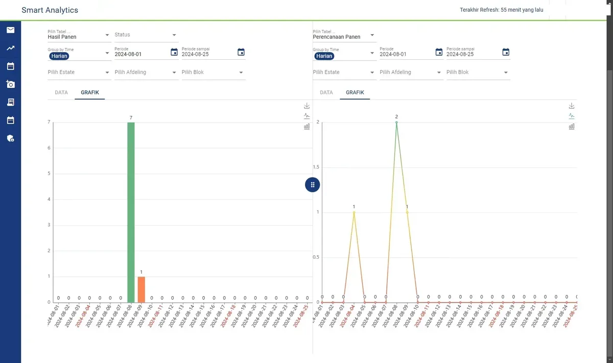

Smart Analytics
Dashboards that show a company what happened to its data, where, who is responsible and the probable cause. From simple tables to complex heatmaps.
My partLead developer in a small team. Still shipping releases. I made about two thirds of the commits.
Built with: Vue 3 (Quasar), Flask, SQLAlchemy, PostgreSQL

Open full sizeTwo datasets side by side, each charted by day for a chosen period.